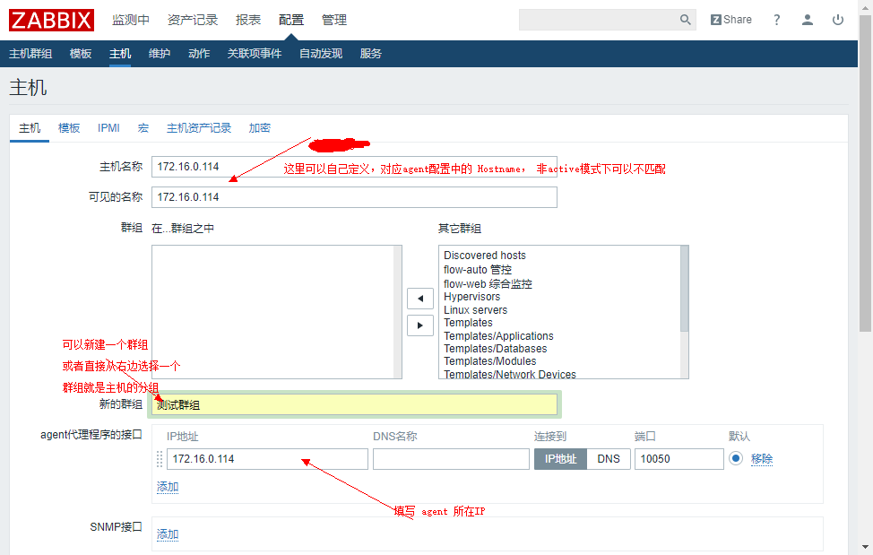
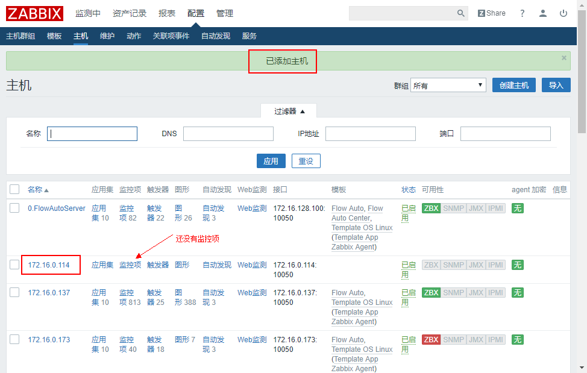
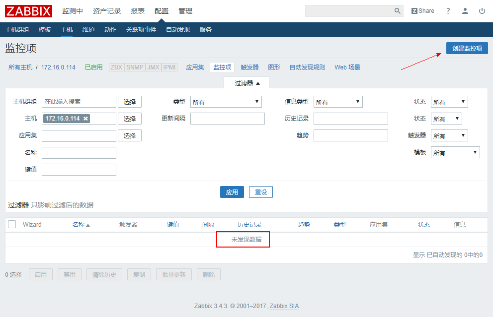
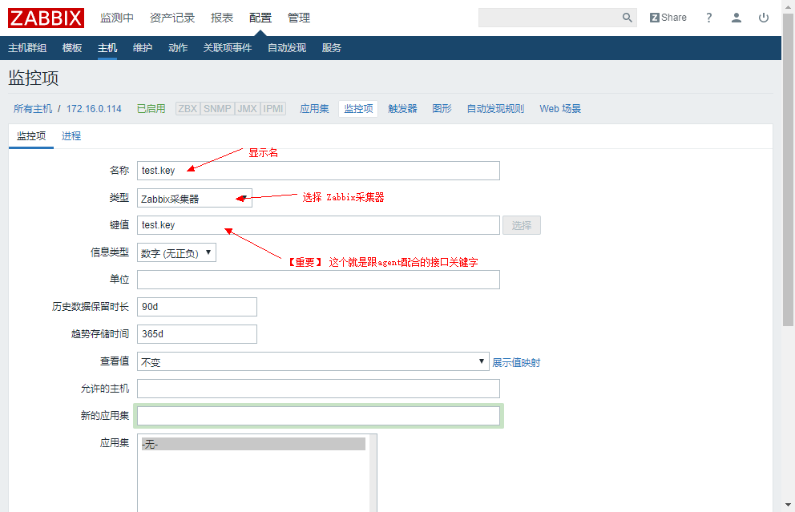
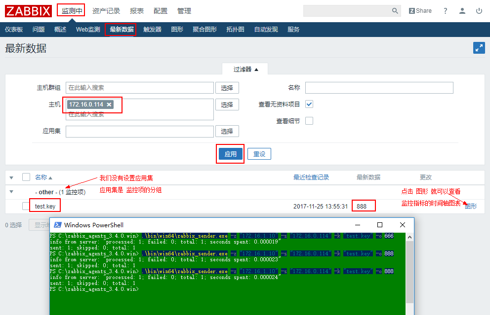
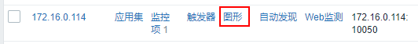
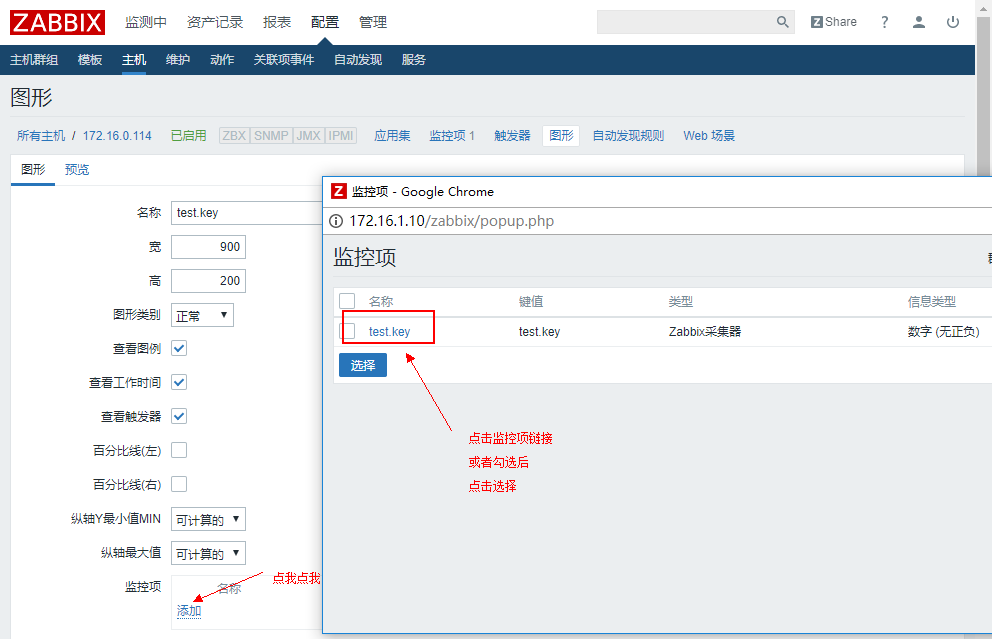

Zabbix创建监控项（采集器）
从实例出发， 使用zabbix采集器创建一个最基本的监控项以及图形
2017/11/25
Zabbix创建监控项（采集器）
监控项是zabbix监控主机的最小
本节主要介绍通过zabbix采集器创建监控项的配置过程以及注意事项
请确保你已经正确完成 zabbix的安装配置
zabbix-agent 配置
假设你已经在需要被监控的客户机上安装了zabbix-agent
也可以直接下载 zabbix download 页面 的 Zabbix pre-compiled agents
配置文件位置:
- *nix 安装完成后zabbix的配置文件默认路径
/etc/zabbix/zabbix_agentd.conf - windows 版本下载解压后
conf/zabbix_agentd.win.conf
关键配置
- Server: zabbix-server所在的IP, 使用
,分割多组, 表示允许这些server获取agent数据 - ListenPort: server端连接端口, 默认： 10050
- ServerActive: 配置类似 Server但是可以配置端口, 默认使用 ListenPort 配置, 表示主动模式提交数据给server
- Hostname: 主动模式下server端识别agent的唯一标识, 可以配置为本机IP, 默认使用 system.hostname
示例：
# Mandatory: no
# Default:
# Server=
Server=172.16.1.10
# Mandatory: no
# Default:
# ServerActive=
ServerActive=172.16.1.10
创建主机
所有监控项应该建立在指定的主机内才能工作，我们先从zabbix的web页面中创建一个主机
zabbix的可配置项还是很灵活的，为了减少新手出错的几率，我们配置主机的时候一律使用 agent端的主机IP

然后在列表中就能看到创建完成的主机

创建监控项
 
客户端发送数据
发送格式为： zabbix_sender -z [zabbix-server] -s [Hostname] -k [item-key] -o [value]
$ zabbix_sender -z "172.16.1.10" -s "172.16.0.114" -k "test.key" -o "888"
# 正常情况
info from server: "processed: 1; failed: 0; total: 1; seconds spent: 0.000019"
# 服务端添加监控项未生效时， 稍后重试
info from server: "processed: 0; failed: 1; total: 1; seconds spent: 0.000019"

创建图形
图形创建比较简单， 切换到配置下 找到主机列表下对应主机的 图形 链接

进入后老地方找创建图形按钮

图形创建完成以后就可以直接点击表单左上角的 tab 按钮 预览 查看实时图表啦
你还可以在 监测中 -> 仪表盘 右上角 编辑仪表盘 把刚刚创建的图形添加到想要的位置
监控项和图形都创建完了， 接下来创建触发器来标识异常监控吧